Charades · Actions & Jobs · page 1/11 · all packs
Reject an image by adding its slug to public/charades/charades-actions/reject.txt (append ! to keep it word-only), then re-run node scripts/genimages.mjs.
1 2 3 4 5 6 7 8 9 10 11 Accountant accountantCC0 · Hedi Sehr · source 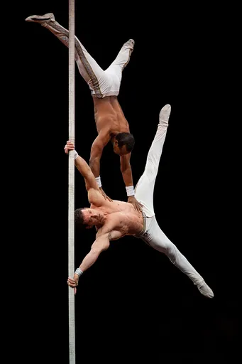
Acrobat acrobatCC BY-SA 3.0 · Ludovic Péron · source 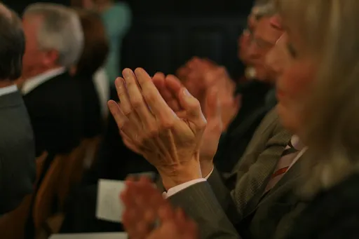
Applauding applaudingCC BY-SA 3.0 · Niklas Bildhauer, Germany. · source 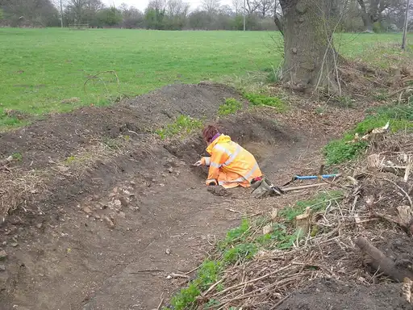
Archaeologist archaeologistCC BY 4.0 · Suffolk Archaeology · source 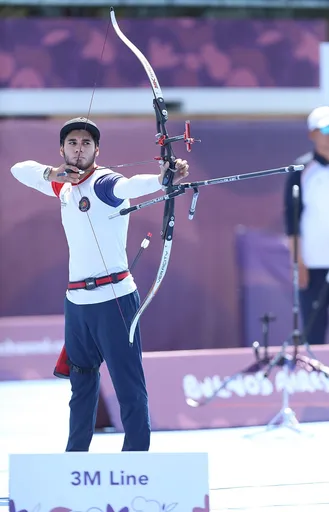
Archery archeryCC BY-SA 4.0 · Martin Rulsch, Wikimedia Commons · source 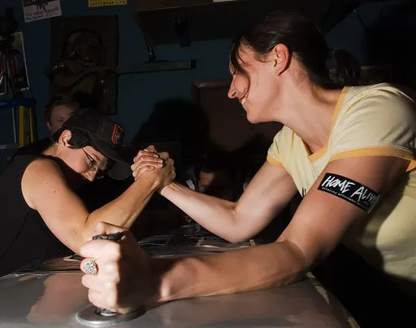
Arm wrestling arm-wrestlingCC BY 2.0 · Dan Bennett · source 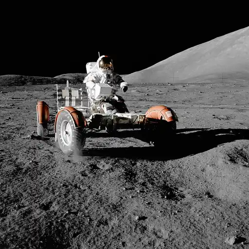
Astronaut astronautPublic domain · NASA / Harrison H. Schmitt · source 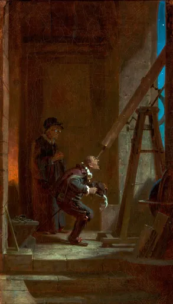
Astronomer astronomerPublic domain · Carl Spitzweg · source 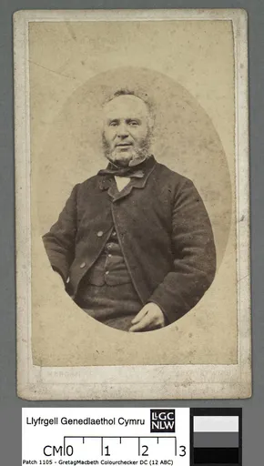
Auctioneer auctioneerPublic domain · Ebenezer Morgan · source 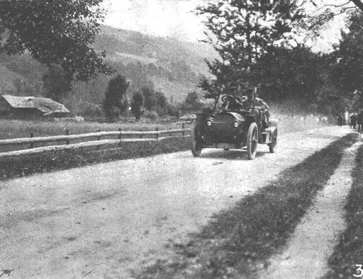
Auto racing auto-racingPublic domain · Allgemeine Automobil-Zeitung · source 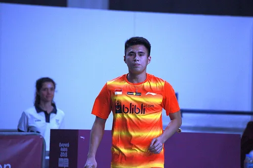
Badminton badmintonCC BY-SA 3.0 · Marcus Cyron · source 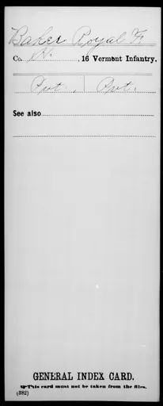
Baker bakerPublic domain · War Department. The Adjutant General's Office. 3/4/1907-9/18/1947 · source 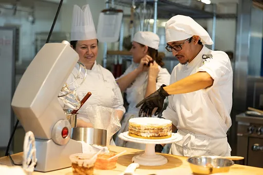
Baking bakingCC0 · waketechcc · source 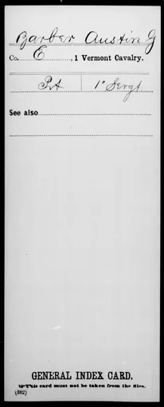
Barber barberPublic domain · War Department. The Adjutant General's Office. 3/4/1907-9/18/1947 · source 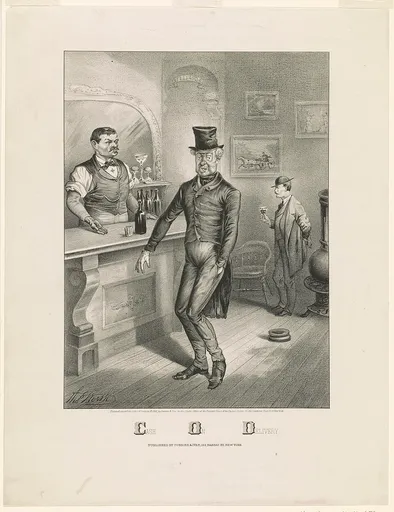
Bartender bartenderPublic domain · Currier & Ives. · source 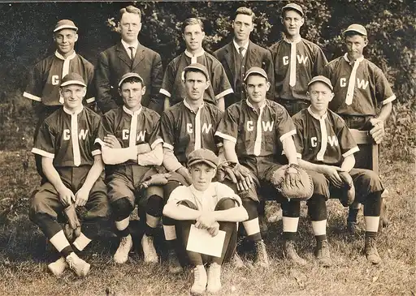
Baseball baseballPublic domain · Unknown authorUnknown author · source Basketball basketballCC BY-SA 4.0 · Sandro Halank, Wikimedia Commons · source 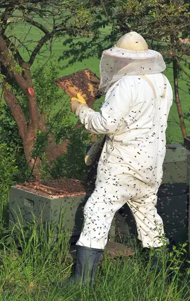
Beekeeper beekeeperCC BY 3.0 · Michael Gäbler · source 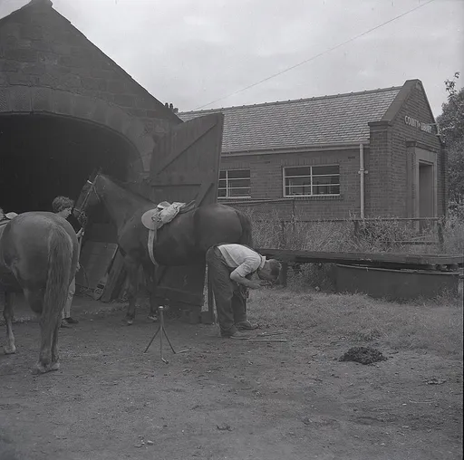
Blacksmith blacksmithPublic domain · Unsure. · source 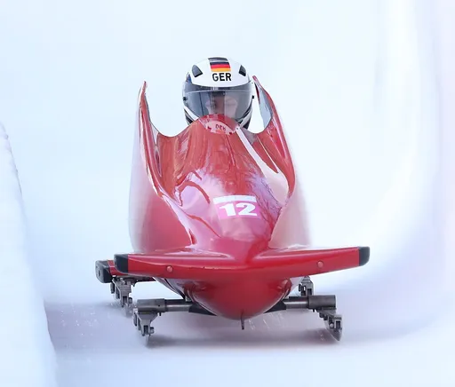
Bobsledding bobsleddingCC BY-SA 4.0 · Sandro Halank, Wikimedia Commons · source 1 2 3 4 5 6 7 8 9 10 11